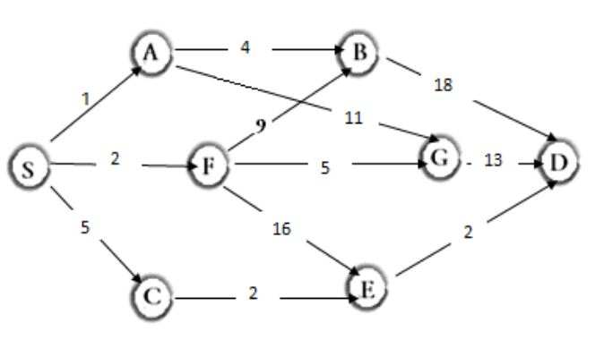

A multistage graph G = {V, E} is a directed graph in which the vertices are partitioned into k>=2 disjoint sets
Vi, 1 <= i <= k. Here V = set of vertices and E = set of Edges.
Consider this graph :

Here Source node and the next node is considered at every stage.
Minimum Spanning of Multistage graph using Dynamic Programming.
1 -> 2
Source node S to next nodes A, F and C
d(S,A) = 1
d(S,F) = 2
d(S,C) = 5
1 -> 2 -> 3
Source node S to next nodes B, G and E
d(S,B) = min{ 1 + d(A,B) ; 2 + d(F,B)}
= min{ 1 + 4 ; 2 + 9}
= min{ 5 ; 11}
d(S,B) = 5
d(S,G) = min{ 1 + d(A,G) ; 2 + d(F,G)}
= min{ 1 + 11 ; 2 + 5}
= min{ 12 ; 7}
d(S,G) = 7
d(S,E) = min{ 2 + d(F,E) ; 5 + d(C,E)}
= min{ 1 + 16 ; 5 + 2}
= min{ 17 ; 7}
d(S,E) = 7
1 -> 2 -> 3 -> 4
d(S,D) = min{ 5 + d(B,D) ; 7 + d(G,D) ; 7 + d(E,D)}
= min{ 5 + 18 ; 7 + 13 ; 7 + 2}
= min{ 23 ; 20 ; 9}
d(S,D) = 9
Hence minimum spanning path from S to D is
S -> C -> E -> D according to Backward Approach